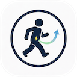

HurryPeePersonalized Slots
Set custom time slots on iPhone (e.g., 08:00, 13:00, 16:00).
Smart Alerts
Gentle, Standard, or Silent — you choose the intensity.
One‑Tap Watch Actions
“Done” or “Remind me later (5 min)” right from Apple Watch.
Progress & History
Daily progress, history log, and 30‑day insight chart.
Apple Health Sync
Seamless sync with Apple Health for holistic wellness.
6 Languages
English, French, German, Japanese, Swedish & more.


Better digestive health without interruption
Ideal for office workers, seniors, or anyone who wants to build a consistent routine while staying focused. HurryPee empowers you with discreet reminders, progress insights, and full privacy.
📘 How to set up HurryPee
- Download HurryPee from the App Store and grant notification permissions.
- Open the iPhone app → set your preferred time slots (e.g., morning, lunch, evening).
- Choose alert style: Gentle (soft tap), Standard (short tone), Silent (haptics only).
- On Apple Watch, the app will automatically mirror your schedule. Use "Done" to log success or "Remind me later (5 min)" to snooze.
- Enable Apple Health sync (optional) to record bowel/bladder moments and support overall health tracking.
- Check the 30-day chart & history to spot patterns and celebrate progress.
🔧 Troubleshooting & FAQ
Ensure Watch mirroring is enabled in the Watch app → Notifications → HurryPee. Also check Focus modes.
Yes, simply open the iPhone app and tap edit on any time slot. Changes sync instantly.
Absolutely. “Silent” uses only haptics without any audible alert — perfect for meetings or quiet environments.
All health data stays on your device and iCloud (encrypted). We never store personal info on external servers.
Currently the app offers detailed in-app charts. Future updates will bring CSV export.
✨ Pro tip: Use the 30-day chart to identify your natural rhythm, and adjust reminders accordingly for optimal bowel & bladder health.
For additional questions or feedback, please refer to the in-app "Send Feedback" option. We read every message.
HurryPee — supporting healthier routines with graceful technology.